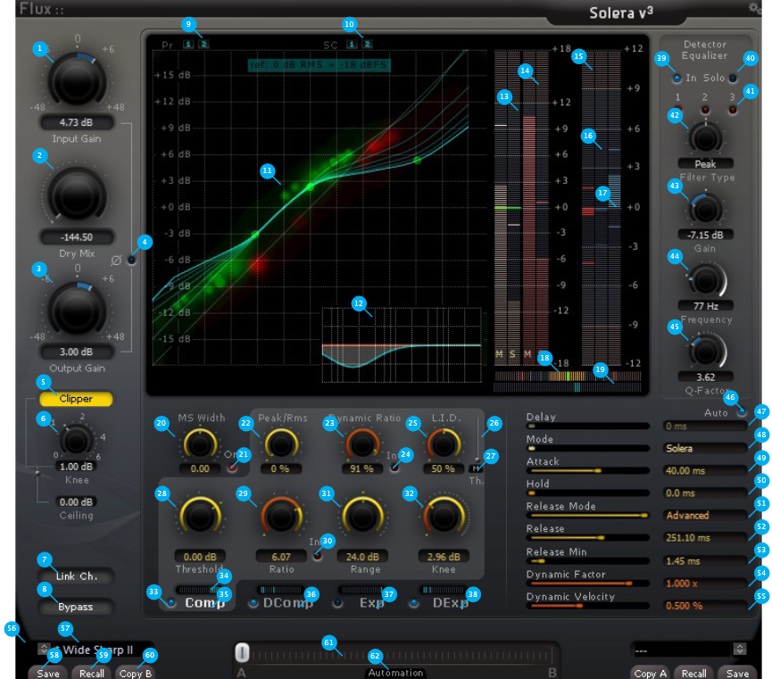

2 General Settings
 ## Input Gain (1) Adjusts the gain applied to the dynamics processing input.
Unit: dB
Value Range: -48 / +48
Step: 0.01
Default Value: 0 dB
2.1 Dry Mix (2)
Adjusts the amount of unprocessed signal mixed in with the processed signal.
The mix is made before the Output Gain (3).
Default Value: -144 dB
2.2 Output Gain (3)
Adjusts the global gain applied to the dynamics processing output.
Unit: dB
Value Range: -48 / +48
Step: 0.01
Default Value: 0 dB
2.3 Invert Phase (4)
Inverts the phase of the processed signal by 180 degrees. The phase flip applies to the detector Equalizer Solo (40) as well.
Default Value: Off
2.4 Clipper Enable (5)
Enables the built in discrete peak limiter, applied at the very last stage of the processing.
Default Value: Off
2.5 Clipper Knee (6)
Adjusts the shape of the peak limiter response curve.
Unit: dB
Value Range: 0 / +6
Step: 0.01
Default Value: 1 dB
2.6 Clipper Ceiling (6)
Adjusts the peak limiter output ceiling.
Unit: dB
Value Range: -0.3 / 0
Step: 0.01
Default Value: 0 dB
2.7 Link Channels (7)
When Link Channels is enabled, by default the maximum value issued from all channels feeding the side chain is retained as the source for processing preserving the space information for the processed multi-channel signals.
When Link Channels is disabled, each channel uses its own value for individual processing.
Using this configuration in conjunction with the MS width section, which encode the signal in MS before processing and decodes it at the output, the M signal can be processed while keeping the S channel untouched.
Default: Enabled
2.8 Bypass (8)
Global bypass, when pressed the inputs are routed directly to the outputs.
Default Value: Off
2.9 Channel Processing Selector (9)
On a multi-channel bus Solera by default processes the incoming audio on all channels. Certain situations may require exclusion of some of the channels from processing. Unchecking a channel excludes the audio material from processing.
By using several instances of Solera in series this feature can be used for explicit processing of specific channels.
Default Value: On
2.10 Side-Chain & External Side-Chain Routing (10)
External side-chain is only available in mono and stereo. On a multi-channel bus Solera is by default feeding all channels to the side-chain.
When using the external side-chain feature an additional side-chain channel button presents itself consecutively after the standard side-chain channel buttons. In mono the side-chain channel is presented as channel 2, and in stereo as channel 3.
Different behaviours are exhibited for the external side-chain depending on the host and plug-in type:
- Audio Unit: The side-chain button is displayed when the host actually feeds audio to the side-chain.
- AAX: The side-chain button is only active if a side-chain bus is selected from the plug-in handler.
- VST: No side-chain feature is available.
Using Solera on a multichannel bus and route the audio in the host accordingly to achieve the same functionality, can be accomplished in most hosts.
Some situations may require for certain channels to be omitted from the side-chain feed. Unchecking a side-chain channel button omits that channel from the side-chain feed.
2.11 MS Width Control (20)
Adjusts the stereo width of the processed signal.
When set to -6 dB the stereo width decreases and increases when set to +6 dB. Extreme settings may due to the nature of the processing produce phase issues.
Unit: dB
Value Range: -6 / +6
Step: 0.01
Default Value: 0
2.12 MS Mode On/Off (21)
The stereo width of the mix is controlled using a MS encoder/decoder at the dynamic processing input/output.
When engaged, the side-chain is fed by a MS encoded signal with the M channel corresponding to the standard left channel, and the S channel corresponding to the standard right channel. This is reflected in the metering section of the graphical display where the label L and R are being replaced by M and S.
This feature is only available when processing two channels (no more, no less).
Default Value: Off